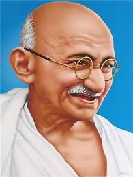
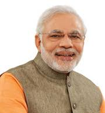
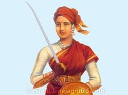
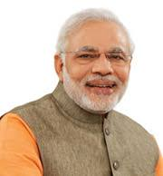
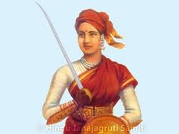
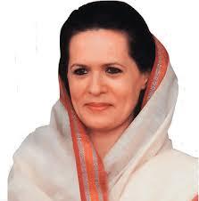
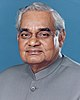
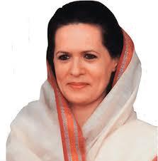
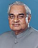

Ever wondered about life before India achieved independence? How people lived under oppression,
fighting their way through? It’s bone-chilling. Today, we cherish freedom, Whether by parents,
siblings, partners, or relatives, everyone yearns to live and speak freely. The constitution of
India grants freedom of speech and expression as a fundamental right. But this cherished life
wouldn’t be possible without the struggle led by India’s top 10 freedom fighters. These great
souls fearlessly devoted themselves to the motherland, making remarkable contributions to the
country’s freedom movement.Let’s explore the list of freedom fighters of India and their profound
impact on our nation’s history.
Prime Minister
The prime minister of India is the chief executive of the Government of India and chair of the Union Council of Ministers.Although the president of India is the constitutional, nominal, and ceremonial head of state,in practice and ordinarily, the executive authority is vested in the prime minister and their chosen Council of Ministers.The prime minister is the leader elected by the party with a majority in the lower house of the Indian parliament, the Lok Sabha, which is the main legislative body in the Republic of India.The prime minister and their cabinet are at all times responsible to the Lok Sabha.The prime minister can be a member of the Lok Sabha or of the Rajya Sabha, the upper house of the parliament. The prime minister ranks third in the order of precedence.
About Freedom Fighters
Gandhiji

Mahatma Gandhi Biography
Mahatma Gandhi, also known as Mohandas Karamchand Gandhi, was born on October 2, 1869, in Porbandar, a coastal town in present-day Gujarat, India. His birth marked the beginning of a life that would later be revered as the guiding light of India’s struggle for independence from British colonial rule. Gandhi’s teachings of nonviolence, civil disobedience, and self-reliance earned him the title of “Mahatma,” meaning “great soul,” and made him a symbol of peace and unity worldwide.
Gandhi was born into a devout Hindu family. His father, Karamchand Gandhi, was a respected diwan (chief minister) of the Porbandar state, while his mother, Putlibai, was a deeply religious and compassionate woman. From a young age, Gandhi imbibed his parents’ values of honesty, compassion, and humility.
Gandhi received his early education in Porbandar, where he demonstrated an insatiable curiosity and love for learning. At the age of nine, he moved to Rajkot to attend the local school. Despite his inherent shyness, Gandhi proved to be an intelligent and disciplined student.
In 1888, at the age of 18, Gandhi left for London to study law. He attended University College London and later the Inner Temple to become a barrister. During his time in London, he embraced vegetarianism, a decision that would become an integral part of his life.
Mahatma Gandhi is known as the “Father of the Nation .” He was the leader of the Indian independence movement. He carried out a nationwide campaign after his return to India in 1915, where he learned about the issues Indians were facing. Therefore, he organised and led three significant movements: the Ahmedabad mill strike in 1918, the Kheda Satyagraha in 1918, and the Champaran Satyagraha in 1917. He founded the Satyagraha Sabha in 1919 in opposition to the Rowlatt Act, which he called the "Black Act." He began the Non-Cooperation movement in 1920 to win Purna Swaraj and self-rule. In 1930, he organised the Salt Satyagraha, popularly known as the Dandi March, to protest against the salt law. He started the Quit India Movement in 1942 at the All India Congress Committee meeting in Mumbai after the defeat of the Cripps Mission.
Javaharlal Nehru
Jawaharlal Nehru: As the first Prime Minister of India, Jawaharlal Nehru played a crucial role in shaping the nation’s destiny after independence. He was a pre-eminent fighter and a key leader in the freedom movement.
One of the top 10 freedom fighters of India, Jawahar Lal Nehru was born on November 14, 1889, in Prayagraj, where he earned the endearing nickname “Chacha Nehru.” His fervor for independence was greatly influenced by Mahatma Gandhi’s endeavors to free India from the British. Starting as a lawyer, Nehru rose to prominence as a politician and advocate for Indian independence. He actively participated in the war for freedom and eventually became the President of the Indian National Congress. When India achieved independence, he was appointed as the country’s first Prime Minister. His affection for children led to the celebration of his birthday as Children’s Day.
Born 14 November 1889
Allahabad, North-Western Provinces, British India
(present-day Prayagraj, Uttar Pradesh, India)
Died 27 May 1964 (aged 74)
New Delhi, Delhi, India
Resting place Shantivan
Political party Indian National Congress
Spouse Kamala Kaul
(m. 1916; died 1936)
Children Indira Gandhi (daughter)
Parents
Motilal Nehru (father)
Swarup Rani Nehru (mother)
Relatives Nehru–Gandhi family
Education
Harrow School
Trinity College, Cambridge
Inner Temple
Awards See awards section
Signature
Sardar Vallabai Patel
Personal details
Born Vallabhbhai Jhaverbhai Patel
31 October 1875
Nadiad, Bombay Presidency, British India
Died 15 December 1950 (aged 75)
Bombay, Bombay State, India
Political party Indian National Congress
Spouse Jhaverben Patel
(m. 1893; died 1909)
Children
ManibenDahyabhai
Relatives Vithalbhai Patel (brother)
Alma mater Middle Temple
Profession
BarristerActivistFreedom fighter
Awards Bharat Ratna (posthumous, 1991)
Sardar Vallabhbhai Jhaverbhai Patel,one of the six children of Jhaverbhai Patel and Ladba, was born in Nadiad, Gujarat. He followed Vaishnavism and belonged to Pushtimarg sect of Mahaprabhu Vallabhacharya and took the diksha from the descendant of Vallabhacharya.Patel's date of birth was never officially recorded; Patel entered it as 31 October on his matriculation examination papers.He belonged to the Patidars, specifically the Leva Patel community of Central Gujarat; although after his fame, both Leva Patel and Kadava Patidar have claimed him as one of their own.


 



 


